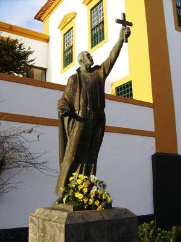
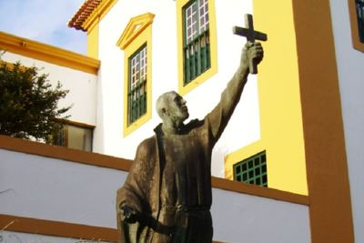

Isusovački blaženici
Svećenik
Bl. Ivan Krstitelj Machado
1581. – 1617.
João Batista Machado s Azora ostao je u Japanu nakon zabrane misionara. Posjet kršćanima u naselju oboljelih od gube doveo ga je do uhićenja.
Tekst je preveden i prilagođen uz pomoć umjetne inteligencije.

Izvor slike


Izvor slike


Izvor slike
- Spomendan
- 22. svibnja
- Zaštitništvo
- Nije navedeno u izvoru
- Životni vijek
- 1581. – 1617.
- Djelovanje
- Misije i evangelizacija · Bolesnici i umirući · Progoni i progonstvo · Mučeništvo
- Razdoblje
- 16., 17. stoljeće
- Napomena o izvoru
- Zaglavlje navodi 22. svibnja 1617., a pripovjedni tekst 22. travnja; zadržan je datum zaglavlja. Izvor također različito navodi zemlju podrijetla; tekst kaže Azori.
- Rođenje — dostupni podaci
- 1581.; dan i mjesec nisu potvrđeni u provjerenom izvoru.
- Mjesto rođenja
- Angra, otok Terceira, Azori, Portugal
- Država rođenja
- Japan
- Datum smrti
- 22.05.1617.
- Mjesto smrti/mučeništva
- Kod Ōmure, Japan
- Okolnosti smrti/mučeništva
- Obezglavljen zajedno s Petrom od Uznesenja za progona kršćana.
- Uloga
- Svećenik
- Mučenik
- Da
- Ostale oznake
- Misionar na japanskim otocima i području Nagasakija
- Pripadnost
- Isusovac
- Drugi oblici imena
- João Batista Machado · João · João Batista Maciado · John Baptist Machado
Životopis
Ivan Krstitelj Machado potjecao je s azorskoga otoka Terceire. Nadahnut pismima Franje Ksaverskoga, školovao se kod isusovaca u Coimbri i 1601. stupio u Družbu. Filozofiju je studirao u Goi, a teologiju u Macau. Nakon ređenja otišao je u Japan, gdje je nekoliko godina mogao javno služiti kršćanskim zajednicama.
Zabrana misionarskoga djelovanja 1614. prekinula je to razdoblje. Machado je ostao u zemlji, danju se skrivao, a noću putovao. Nije odustao ni od posjeta katolicima u zajednici oboljelih od gube na otočju Gotō, premda su luke nadzirali doušnici. Uhićen je ubrzo nakon dolaska i premješten u Kōri.
S jednim franjevcem proveo je završne tjedne u kući otpaloga kršćanina Tomonage. Domaćin im je dopuštao slaviti misu i razgovarao s njima o vjeri. Prije pogubljenja dvojica su se svećenika međusobno ispovjedila. Njihovo svjedočanstvo potaknulo je Tomonagu na povratak kršćanstvu.
Biskupija Angra službeno ga časti kao svojega zaštitnika. U pastirskoj poruci uz četiristotu obljetnicu potvrdila je njegovo mučeništvo 22. svibnja 1617. i beatifikaciju 1867. Istaknula je da zaštitnik nije samo zagovornik nego i uzor kršćanskoga svjedočenja. Njegovo azorsko podrijetlo tako ostaje povezano s misijskim služenjem daleko od domovine.
Život i nasljeđe
Machadov posljednji pohod bio je povezan s kolonijom oboljelih od gube na otočju Gotō. Takav odlazak zahtijevao je plovidbu kroz luke pod nadzorom. U zatočenju je dijelio vjerske razgovore s domaćinom Tomonagom, čija se vlastita povijest kasnije povezala s povratkom kršćanstvu. Svećenici su jedan drugomu mogli pristupiti ispovijedi prije pogubljenja. Ta konkretna uzajamna služba razlikuje njegov završetak od sudbine zatvorenika koji su mjesecima bili sasvim odvojeni od drugoga svećenika.
Tekst je preveden i prilagođen uz pomoć umjetne inteligencije.
Pročitaj više na izvornoj stranici ↗